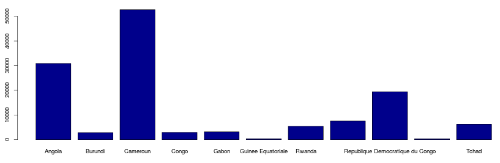

| Dashboards on economic diversification and structural transformation in Central Africa |
| Navigate by country or country group | Navigate by topic |
| Angola |  |
| Burundi | |
| Cameroun | |
| Central African Republic | |
| Chad | |
| Congo, Dem. Rep. | |
| Congo, Rep. | |
| Equatorial Guinea | |
| Gabon | |
| Rwanda | |
| Sao Tome and principe | |
| CEMAC | |
| ECCAS |